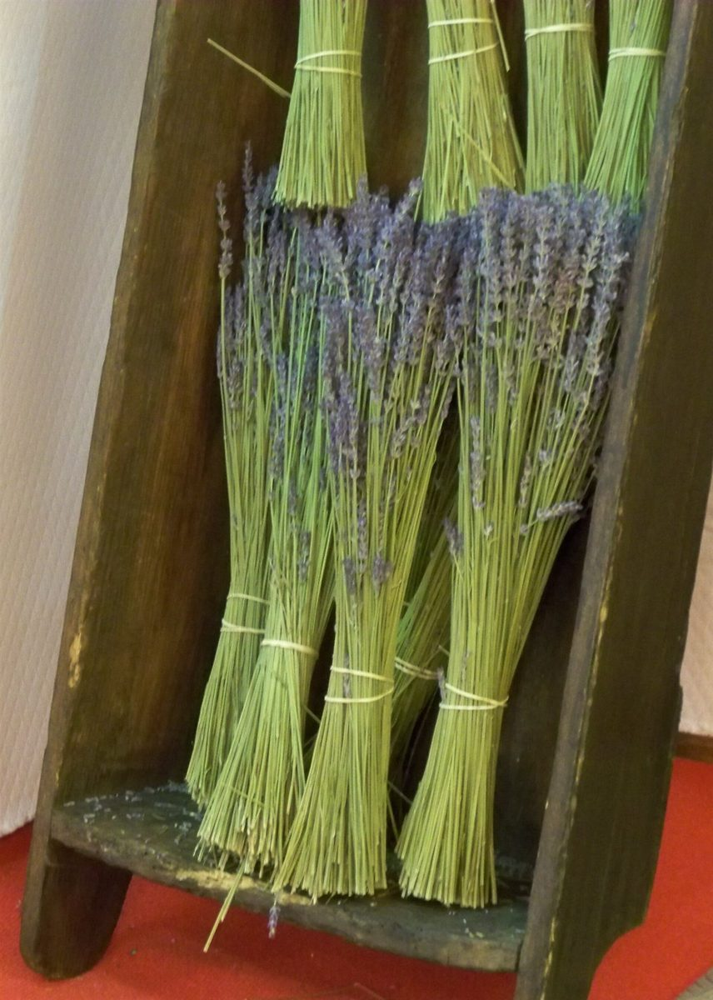

口コミ
こんなふうに思うかもしれない
店名と業種から自然に想像できる気持ちを、制作側が創作したものです。
以下は制作側が考えた創作のイメージ例で、実在のお客様の投稿ではありません。実際の口コミ・評価とは関係ありません。
いつか行ってみたいお店です。まずはInstagramをのぞいて、どんなお菓子の写真があるのか見てみたいと思います。
焼き菓子のお店と聞いて、気になっています。Instagramを見てから、足を運べる日を考えてみたいです。
屋号の「やさしいおかし」という言葉が印象に残りました。いつか行ってみたいので、Instagramをチェックしてみます。
